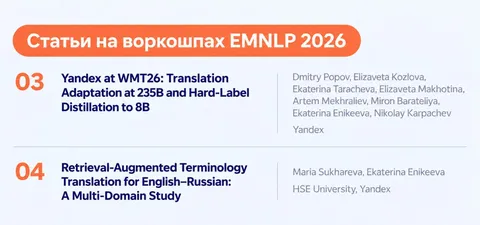

Продолжаем рассказывать о работах, принятых на EMNLP в Венгрии. О статьях основного трека написали здесь. Ещё две работы от авторов из Яндекса будут представлены на воркшопах.
Yandex at WMT26: Translation Adaptation at 235B and Hard-Label Distillation to 8B
Над статьёй работали инженеры Яндекса: Дмитрий Попов, Елизавета Козлова, Екатерина Тарачева, Елизавета Махотина, Артём Мехралиев, Мирон Барателиа, Екатерина Еникеева и Николай Карпачёв.
WMT — ежегодная конференция по машинному переводу, которая в последние годы проходит совместно с EMNLP. В рамках WMT проводится соревнование General Machine Translation. В нём сравнивают разные системы машинного перевода. Яндекс участвовал и в прошлом году — тогда исследователи представили специализированную 7B-модель для перевода.
В этом году от Яндекса участвуют две модели:
• Yandex — большая MoE-модель на 235 млрд параметров, которая соревновалась в unconstrained-треке (без ограничений). Команда использовала переводы прошлогодней 7B-модели как часть обучающих данных. Цель — соединить естественность переводов специализированной модели со способностью большой модели точнее учитывать смысл и контекст, не повторяя на большом масштабе весь многоэтапный процесс обучения небольшой модели.
• Yandex-8B — компактная модель на основе YandexGPT-5-Lite-8B, дообученная на переводах, сгенерированных большой моделью Yandex. Её обучили переводить с английского на четыре языка (русский, белорусский, казахский и армянский). Участвовала в constrained-треке, где действовали два ограничения: модель должна содержать не более 20 млрд параметров и быть опубликована в открытом доступе.
В статье подробно рассказано как обучали обе модели.
Они показали хорошие результаты в переводе с английского на русский, а Yandex-8B заняла второе-третье место среди constrained-систем. Все результаты описаны в отдельной работе Findings of the WMT26 General Machine Translation Shared Task.
Retrieval-Augmented Terminology Translation for English–Russian: A Multi-Domain Study
Над статьёй работали Мария Сухарева из НИУ ВШЭ и Екатерина Еникеева из Яндекса.
Авторы исследовали, как улучшить перевод специализированных терминов с английского на русский в десяти профессиональных областях. Сравнивали два подхода: RAG с поиском переводов в терминологической базе и дополнительное дообучение модели с помощью SFT и CPO.
Оказалось, что основной прирост качества даёт именно RAG — даже без дообучения модели побили две коммерческие системы по качеству перевода терминов. Дополнительное обучение улучшает результат незначительно, причём ценой снижения беглости перевода.
Также авторы опубликовали свою базу на 50 тысяч терминов и два тщательно отобранных тестовых набора данных.
#YaEMNLP2026
ML Underhood
